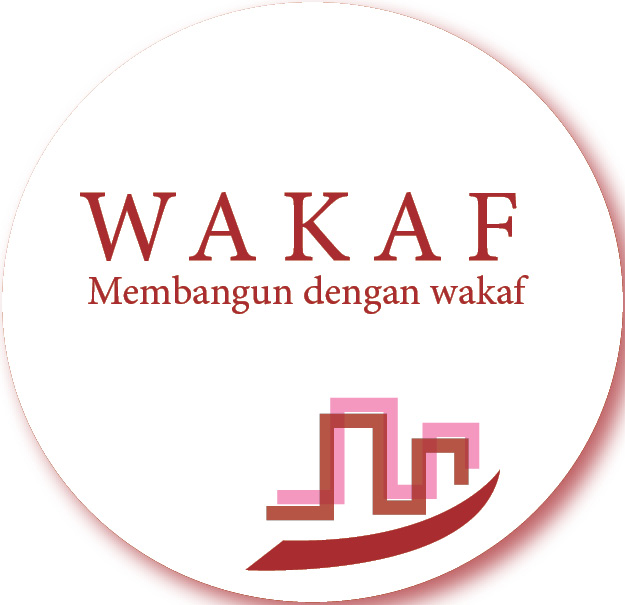

Semangat Kontribusi Untuk Negeri

Wadah Empati & Cita Anak Negeri
Sekilas We Can
Kami hadir untuk bisa berperan dalam sebuah perubahan dan mewadahi rasa peduli anak negeri ini, terhadap segala permasalahan-permasalahan yang ada di masyarakat. WE CAN juga merupakan Lembaga yang diharapkan dapat mewadahi Cita-Cita mulia setiap anak negeri ini, Indonesia.
MARI BERSAMA UNTUK MENJADI BAGIAN DALAM SEBUAH PERUBAHAN
Berbagi Paket Kelengkapan Sekolah
Paud Binaan We can (Paud QTA)
Bantuan Paket Untuk Guru
Menebar Kebermanfaatan Yang Terus Berkesinambungan
PENDIDIKAN
- - SMA TERBUKA
- - Ruang Kelas Sang Pemimpin
- - Beasiswa Anak Negeri
KESEHATAN
- - Layankes
- - Bina Lansia
- - campaign for healthy life
PEMBERDAYAAN
- - Life Skill Training
- - Permodalan
- - Sentra Produksi
Kemanusiaan
- - Save Palsestine
- - Dongeng For Humanity
- - Bencana Alam
LINGKUNGAN
- - Susur Sungai
- - campaign for climate change
- - 1000 Pohon 1 Desa
Menghimpun Kebaikan

